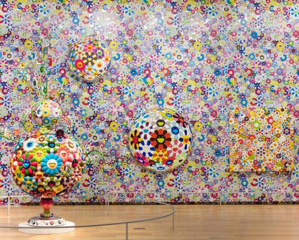

Welkom op mijn internet pagina :))
Wie ben ik?
Ik ben Rohan, 15 jaar en studeer ICT op het ROCvA
Wat zijn mijn hobbies & Waar hou ik van?
Boeken. Vooral Engelse boeken.
Gamen. Ik speel al bijna heel m'n leven video games.
Kunst. Ik hou heel erg veel van visuele kunst, zelf doe ik er verder helaas niks mee.
Muziek. Heb een enorme passie voor muziek, vrijwel alle genres.
Wat zijn mijn favorite TV-Series?
- The big bang Theory
- Fresh Prince of Bell Air
- Friends
- Kevin can wait

Dit is een van Takashi Murakami zijn tentoonstellingen
Je kunt hier via Wikipedia wat meer informatie vinden over mijn favorite kunstenaar: Takashi Murakami :))